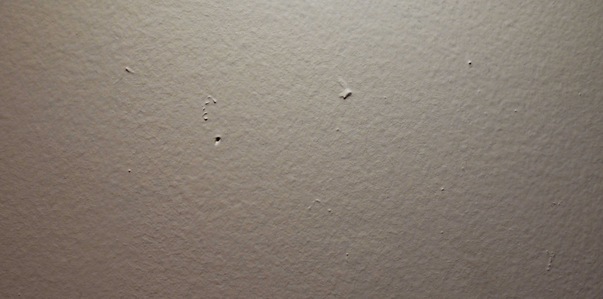

THE QUEER OBJECTS ARCHIVE
A Digital, Archival Exploration
ABOUT
ARCHIVE
This final frame in this triptych holds objects and photos that represent my best friend,
Michael Armstrong. Although Armstrong, Betz and myself can all be compared by our genders, sexualities and
even first names, I wanted to pair myself, my boyfriend and my best friend up to show how stereotyping people
by their name or gender can leave out possibilities for seeing much deeper into people's lives and experiences.
Armstrong is my oldest friend, and he is a very outgoing and fun loving person. He enjoys going out for drinks,
doing drag shows with his boyfriend, wearing extravagant accessories and overall constantly meeting new people
wherever he goes. Knowing him for many years, I can see how the love and energy from his “highschool sweetheart”
parents has translated into a free spirit that is full of life.